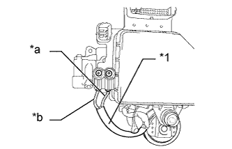

DTC C1251 Обрыв в цепи двигателя насоса |
| Код DTC | Условие обнаружения DTC | Неисправный участок |
| C1251 | Существует обрыв в цепи системы электродвигателя (входной цепи электродвигателя). |
|
| 1.ПРОВЕРЬТЕ СОЕДИНЕНИЕ ЖГУТА ПРОВОДОВ ЭЛЕКТРОДВИГАТЕЛЯ НАСОСА |
Снимите гидравлический усилитель тормозной системы в сборе (для моделей с левосторонним рулевым управлением Нажмите здесь, для моделей с правосторонним рулевым управлением: Нажмите здесь).
Проверьте момент затяжки 2 винтов, которые крепят жгут проводов, соединяющий электромагнитный клапан главного цилиндра и усилитель тормозной системы с насосом гидроаккумулятора в сборе (для моделей с левосторонним рулевым управлением Нажмите здесь, для моделей с правосторонним рулевым управлением: Нажмите здесь).
|
| ||||
| OK | |
| 2.ПРОВЕРЬТЕ СОПРОТИВЛЕНИЕ ЖГУТА ПРОВОДОВ ЭЛЕКТРОДВИГАТЕЛЯ НАСОСА |
С помощью отвертки выверните 2 винта и снимите жгут проводов с электромагнитного клапана главного цилиндра.
|  |
Измерьте сопротивление в соответствии со значениями, приведенными в таблице ниже.
| Контакты для подключения диагностического прибора | Условие | Заданные условия |
| Контакт красного провода - контакт черного провода | Всегда | Менее 2 Ом |
| *1 | Жгут проводов электродвигателя насоса |
| *a | Красный провод |
| *b | Черный провод |
|
| ||||
| OK | |
| 3.СНОВА ПРОВЕРЬТЕ DTC |
Соберите гидравлический усилитель тормозной системы в сборе (для моделей с левосторонним рулевым управлением Нажмите здесь, для моделей с правосторонним рулевым управлением: Нажмите здесь).
Установите гидравлический усилитель тормозной системы в сборе (для моделей с левосторонним рулевым управлением Нажмите здесь, для моделей с правосторонним рулевым управлением: Нажмите здесь).
Удалите коды DTC (Нажмите здесь).
Проверьте, выводится ли тот же DTC (Нажмите здесь).
| Результат | Следующий шаг |
| DTC не выводится | А |
| DTC выводятся (для моделей с левосторонним рулевым управлением) | B |
| DTC выводятся (для моделей с правосторонним рулевым управлением) | C |
|
| ||||
|
| ||||
| А | ||
| ||